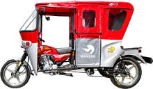
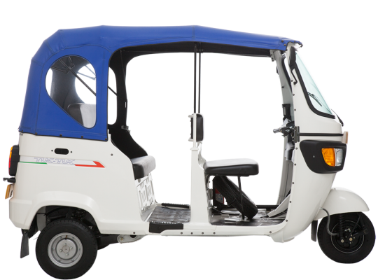
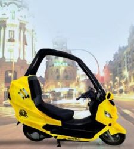

Mototaxi
El diccionario de la Real Academia Española define el término mototaxi como un peruanismo que significa “motocicleta de tres ruedas y con techo que se usa como medio de transporte popular para trechos” a cambio de dinero de la misma forma que un taxi. Sin embargo, este término ha sido acuñado ya en más de 25 países, de diferentes lenguas, para significar el vehículo motocicleta (vehículo automóvil de 2 ruedas en línea), motocarro (vehículo de 3 ruedas, carrozado, con componentes mecánicos de motocicleta) o mototrailer (motocicleta adaptada con carroza trasera) destinado a la prestación del servicio de transporte público individual de pasajeros.
Mototaxi en Perú

Los primeros mototaxis llegarón a la selva peruana hace 20 años provenientes de la India. Lo cual no es del todo cierto, ya que en realidad el mototaxi como lo conocemos ahora nació en la ciudad de Iquitos, cuando un mecánico curioso decidió, a inicios de la década de los 80, combinar la parte delantera de una motocicleta estándar con un soporte para llevar pasajeros y cargas. Este producto gozó de popularidad rápidamente y de ahí en más se adaptó al transporte urbano. Aparentemente una empresa automotriz japonesa, quizás Honda, compró los derechos de este vehículo, comenzando la fabricación y distribución masiva a los pocos años. El mototaxi que proviene de la India llegó mucho después, y al menos en las zonas selváticas no goza de gran aprecio por las ruedas pequeñas y carrocería cerrada que son característicos de estos vehículos. El Perú se convirtió así en el primer país en América Latina en adoptar a los mototaxis dentro de la oferta de Transporte Público, debido a la adaptabilidad a los diferentes tipos de geografía del país. Fue principalmente en ciudades como Iquitos, Pucallpa o Puerto Maldonado donde se popularizaron desde inicios de los años 80.
El mototaxi se incorporó al transporte público y se convirtió en una herramienta de trabajo para muchos pobladores, originándose una sobreoferta del servicio, que ha desencadenado en la disminución de la calidad del servicio, rebaja de tarifas, baja rentabilidad del negocio, falta de mantenimiento a las unidades, competencia desleal, etc. lo que conlleva al panorama actual que se manifiesta a través de un alto grado de informalidad, alto riesgo de accidentes de tránsito y contribución a empeorar las condiciones ambientales y del tránsito de las principales ciudades.
Hoy en dia ya se fabrican en el Perú y es el transporte de pasajeros o de carga más usado en la mayoría de provincias de climas muy calurosos, además de haberse incorporado también a las ciudades de la costa como Trujillo, Chiclayo, Piura, Ica, Tacna y la capital Lima (aunque solo en algunos distritos del área metropolitana).
Mototaxi en Colombia

Sta actividad, es muy común en las ciudades colombianas donde se hace presente un gran porcentaje de personas desempleadas, como son Cartagena, Barranquilla, Buenaventura, Principalmente en Sincelejo y Montería, pero su origen se dio en la ciudad de Lorica, Córdoba. De acuerdo con el Ministerio de Transporte y el Gobierno Nacional esta actividad es ilegal si se presta en motocicletas (2 ruedas) mas no si se presta en motocarros como el Bajaj RE cuya matricula de servicio público es permitida en ciudades de menos de 50.000 habitantes.
Una acepción particular, para el caso colombiano, se encuentra en la palabra mototaxismo, que se aplica al fenómeno surgido a partir de la utilización masiva del mototaxi en la mayoría de los municipios del país.
Este fenómeno nació Santa Cruz de Lorica en el corregimiento de Mata de Caña y se extendió a corregimientos vecinos como Los Morales, El Carito, Los Gómez y Cotorra (actualmente municipio), ubicados a 35 kilómetros al norte de la capital del departamento de Córdoba, Montería, en el año de 1980. El primer mototaxista fue Miguel Arteaga, quien empezó a darle ese uso a su moto personal, que antes de eso utilizaba para la venta de pescado.
Surge por la necesidad que tenían los moradores de estas poblaciones en desplazarse hasta la carretera que comunica a las ciudades de Montería y al casco urbano de la localidad. La practica se masificó en los corregimientos mas distantes como en el caso de Cotorra, que se encuentra aproximadamente 4.5 kilómetros de la carretera por donde transita el servicio de transporte público intermunicipal. Al poco tiempo en Lorica, se tomó como transporte urbano.
En los últimos dos años el fenómeno de las mototaxis ha tomado unas dimensiones inimaginables, a tal punto que ya se han creado más de 160 empresas o cooperativas en todo el país, que presionan para legalizar y normalizar ante las autoridades de Tránsito locales y Nacionales la prestación de este servicio a la comunidad.
Mototaxi en Europa

Las mototaxis empezarón a rodar hace unos 10 años en Europa. La ciudad de Londres fue la primera capital europea en disponer de este servicio donde Sir Richard Branson tiene su propia compañía de mototaxis llamada Virgin Limobikes. Pero el país donde, sin duda, ha triunfado este servicio es Francia; las mototaxis llegaron hace ya casi 10 años y desde entonces no han parado de crecer tanto en numero de mototaxis, como en usuarios y clientes. Hoy en día, más de 600 mototaxis prestan servicio en la ciudad de París.
El tipo de clientela en Europa es distinto al de otras regiones donde existe el servicio de mototaxi: sobre todo ejecutivos, hombres y mujeres de negocios que desean optimizar sus tiempos de desplazamientos.
Las mototaxis europeas son, en general, motos grandes y lujosas con gran capacidad de carga. Los pilotos entregan a sus clientes el equipamiento necesario para que se suban a la moto: casco, chaqueta, guantes, etc.
Este popular servicio llegó a España en octubre de 2009, de la mano de la empresa madrileña Moto-City, que ha sido pionera en el servicio de mototaxi en España, también llamado transporte de personas en moto. Por su compromiso con el medio ambiente, Moto-City ha sido premiada por el Ayuntamiento de Madrid por ser la primera empresa madrileña en compensar sus emisiones de CO2, mediante el programa "Madrid Compensa".
En marzo de 2010 se puso en marcha Moto-Wings Moto-Taxi Madrid, la primera compañía de España en ofrecer el servicio con motocicletas (no scooters) de gran cilindrada. Está especializada en empresas (consultoras, hoteles de lujo, grupos de televisión, etc.) donde sus clientes valoran la puntualidad en sus desplazamientos y la calidad del servicio.
En octubre de 2012 la empresa MotoTaxi Low Cost empezó a brindar en Madrid el servicio de transporte de pasajeros y mensajería a bajo coste, siendo pionera de esta modalidad en España. Su llegada fue acompañada por una gran controversia por parte de los taxistas tradicionales que acusaron a la empresa de no cumplir con lo que dicta la ley sobre Transporte Público Urbano e Interurbano de Viajeros. En realidad, esa normativa no incluye en su regulación a los vehículos de tres o menos ruedas.
| Lo Bueno y lo Malo |
| No. |
Bueno |
Malo |
| 1. |
Ocupa poco espacio |
Se puede transportar 4 personas adultas como maximo |
| 2. |
Gasta poco combustible |
No es muy seguro |
| 3. |
El precio es economico |
Al utilizar gasolina, contamina bastante |
Si gusta, puede dejar un comentario